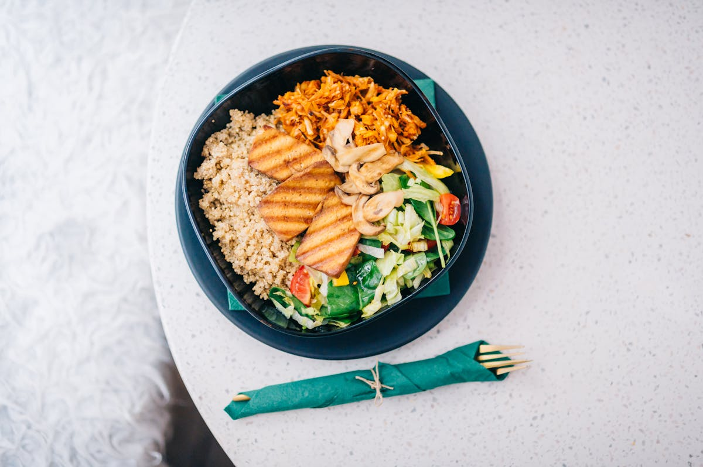

藜麦
快速回答
藜麦是一种实用的全谷物样食物，提供植物蛋白、纤维、镁和多种矿物质。它适合碗餐、沙拉和备餐，能让抗炎餐食更完整。
它是什么
藜麦是一种来自南美的种子，日常使用方式类似全谷物。它煮熟后口感松散，适合沙拉、碗餐和备餐。
藜麦天然不含麸质，烹饪速度较快，是很多人想让午餐更完整时的实用选择。
为什么藜麦可能支持抗炎饮食
藜麦提供纤维、植物蛋白、镁和多种矿物质。它能让餐食更稳定，也适合替代部分精制主食。
它的价值不在于神奇，而在于能和蔬菜、豆类、鱼类、橄榄油和香草一起组成完整餐食。
关键营养和化合物
藜麦提供碳水、植物蛋白、纤维、镁、锰和铁等营养，也含有一些植物化合物。
潜在健康益处
- 增加主食中的纤维和植物蛋白。
- 适合做碗餐和备餐。
- 天然不含麸质。
- 和蔬菜、豆类、鱼类、橄榄油都容易搭配。
- 能让午餐和晚餐更稳定。
藜麦怎么吃
- 煮熟后搭配烤蔬菜和橄榄油。
- 做冷沙拉，加入番茄、鹰嘴豆和香草。
- 用藜麦做碗餐基础，搭配菠菜和三文鱼。
- 加入汤里增加饱腹感。
- 提前煮一锅，分装给几天使用。
购买和储存
购买干藜麦后放在密封容器中，置于阴凉干燥处。烹饪前冲洗，煮熟后冷藏并在几天内食用。
FAQ
藜麦抗炎吗？
藜麦可以作为抗炎饮食中的主食选择，因为它提供纤维、植物蛋白和矿物质。
藜麦是谷物吗？
严格说藜麦是伪谷物，但日常使用方式类似全谷物。
藜麦需要清洗吗？
通常建议烹饪前冲洗，以减少表面皂苷带来的苦味。
可以每天吃藜麦吗？
可以，但不必每天吃。和燕麦、扁豆、鹰嘴豆等轮换更实际。
证据说明
关于藜麦的研究通常关注营养组成、植物化合物和整体饮食习惯。
本页将藜麦作为抗炎饮食中可以辅助搭配的一种食物来介绍，而不是把它作为单独的治疗方法。